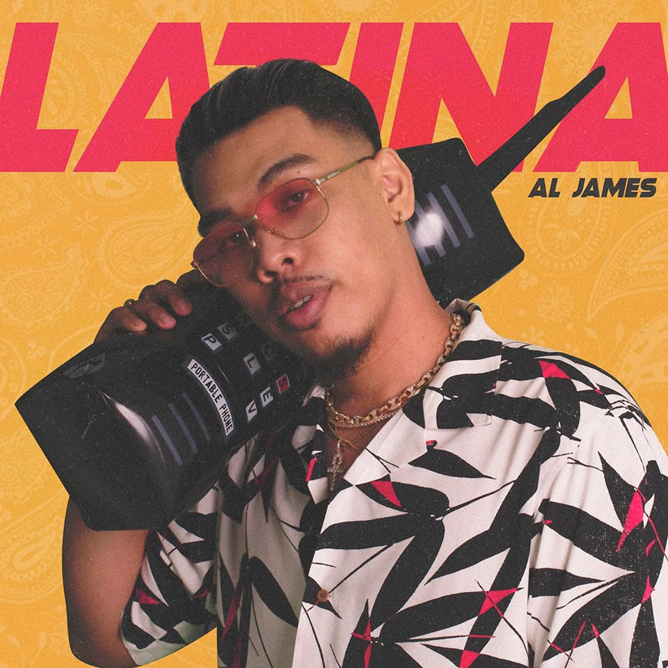

Si Yukihiro Rubio na nakilala sa kanyang stage name bilang Kiyo ay nagmula sa Navotas City. Naging popular si Kiyo dahil sa kanyang signature emotional at Lo-Fi style.

Aljames - Alvin James Manlutac
Al James graduated with a degree in Fine Arts and Design at the University of Santo Tomas. He became involved in hip-hop where he met his collaborators, collectively known as "Baryo Berde Atbp." whom he met while at UST. The group now has 11 members.
James Reid - Robert James Reid
Filipino-Australian singer-actor James Reid has released one studio album, three extended plays, twenty-six singles (including four as a featured artist), three soundtrack albums, one mixtape and eighteen music videos. After being named as the Big Winner of Pinoy Big Brother: Teen Clash 2010